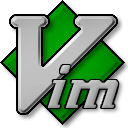

On va faire le tour des outils indispensables pour mettre ça en place. Bien évidemment, mon avis est subjectif et ce n'est qu'une solution parmis tant d'autres.
C'est parti !
1) La distro

On commence par le choix de la distribution. Je te conseille vivement de partir sur arch linux pour les raisons suivantes:
- rolling-release: ton système est tout le temps à jour et tu bénéficies des dernières versions des logiciels.
- légèreté: l'installation de base est minimaliste, ce qui fait que tu n'installes que ce dont tu as besoin.
- la communauté: le wiki et le forum de la communauté sont vraiment très bien foutus. Il y a même une communauté francophone.
- AUR: c'est un dépôt communautaire où l'on trouve absolument tout.
Les principales critiques envers arch linux concernent en général la stabilité du système. La stabilité, c'est bien pour un serveur. Mais ce n'est pas forcément le plus important pour le poste de travail d'un dev. Avec arch, tu pourras tester les toutes dernières versions des logiciels et utiliser les nouvelles librairies à la mode !
Pour l'installer, je t'invites à le faire à la main en suivant la doc officielle, histoire d'entrer dans le bain. Si tu as vraiment la flemme, tu peux passer par architect pour te faciliter la chose.
N'oublie pas d'installer yaourt pour bénifier du dépôt AUR.
Tu auras remarqué que les tutos de ce blog sont en général à destination des utilisateurs ubuntu/debian. Pas de panique, il te suffira grosso-modo de remplacer les apt-get install par pacman -S pour installer les paquets. Pour le reste, c'est généralement du pareil au même.
2) Le shell
Maintenant, tu vas t'installer un shell très pratique appelé zsh, qui permet une complétion avancée et l'utilisation d'une syntaxe plus sympa que bash pour les scripts.
Et en plus de zsh, tu vas également t'installer tmux, qui est un multiplexeur de terminaux. Il permet de manipuler plusieurs terminaux au sein d'une même fenêtre et de se rattacher à une session tmux distante. C'est très pratique pour le travail collaboratif et pour lancer des commandes sur des serveurs.
pacman -S zsh tmux
exec zsh
chsh -s /bin/zsh
Il ne te reste plus qu'à customiser ton .zshrc comme bon de semble.
3) Le gestionnaire de fenêtre

Oublie les kde, gnome et autres cinammon. Ces environnements sont très bien pour un usage classique de linux ; mais pour du dev, il vaut mieux se tourner vers un tiling window manager.
Je te conseille de partir sur i3, qui est facile d'accès, customisable et efficace. Il te permettra d'utiliser l'ensemble de l'espace visible disponible, de splitter tes fenêtres comme bon te semble et d'exécuter tes applications. De plus, tu pourras manipuler tout ton bureau au clavier, ce qui fait un sacré gain de temps.
pacman -S i3
echo "exec i3" > ~/.xinitrc
reboot
A côté d'i3, tu pourras installer entre autres:
- i3-style: pour styliser i3.
- dmenu: pour avoir un lanceur d'applications.
- i3bar et i3status: pour avoir une barre de status en bas de l'écran.
- i3lock et xautolock: pour verrouiller l'écran au bout de quelques minutes d'inactivité.
- nitrogen: pour changer l'image de fond.
- pactl de pulseaudio: pour changer le volume au clavier.
- dunst: pour les notifications.
- redshift: pour éviter de se fatiguer les yeux.
- pcmanfm: pour la gestion des fichiers.
- firefox: pour la navigation web.
Jete un coup d'oeil à ma customisation si ça t'intéresse.
Et si tu as besoin d'aide, la communauté reddit est très active.
4) Je veux coder !
Pour coder, tu auras besoin d'un éditeur de texte. Je te recommande fortement atom, que j'ai déjà présenté ici.
En plus d'atom, tu auras besoin d'un éditeur qui peut s'exécuter dans un terminal. Pas besoin de chercher bien loin, le plus avancé est vim. Mais tu peux également te tourner vers son successeur, neovim.
Comme le reste des outils présentés sur cet article, il est aussi très fortement customisable.
En plus des éditeurs de texte, il te faudra un gestionnaire de version de code. Sans surprise, je t'invite à installer git, qui te permettra de partager ton code sous github et qui s'interface très bien avec atom.
pacman -S git vim
yaourt -S atom
Enfin, à toi d'installer ce qui te manque: python, node.js, postgresql, nginx, etc ...
5) Environnements isolés

Dans le cas où tu aurais besoin de tester des applications sous d'autres distributions, tu pourras utiliser vagrant pour installer des vms ou docker pour utiliser des conteneurs.
yaourt -S vagrant docker docker-compose
A l'aide de docker-compose, tu pourras te créer un environnement spécifique par application en utilisant des conteneurs. Par exemple, un pour elasticsearch, un autre pour mysql, un troisième pour redis et un quatrième pour ton application django.
Tu bénificieras ainsi d'environnements complètement isolés, sans devoir installer des tonnes d'applications directement sur ton système.
A toi de jouer maintenant, et n'hésite pas à donner tes propres astuces dans les commentaires !